Department of Statistical Sciences, University of Cape Town
Original slide title: Applied Spatial Data Analysis — Spatial Lattice Data I. Dr. Şebnem Er, Department of Statistical Sciences, University of Cape Town.
ASDA: Spatial Lattice Data Analysis I
Introduction to lattice data and plotting
Spatial dependency
Defining spatial neighbours
Defining spatial weights matrices
Global Moran’s \(I\)
Geary’s \(C\)
Spatial correlogram
Local Moran’s \(I\)
Resources
For general spatial data handling in R using simple features (sf).
[2] Arbia , Giuseppe, (2014). A Primer for Spatial Econometrics : With Applications in R. Palgrave Macmillan UK. (available at UCT library online resource)
[3] Elhorst , Paul. J. (2014). Spatial Econometrics : From Cross-Sectional Data to Spatial Panels. Springer Berlin
[4] Gelfand, A.E., Diggle, P., Guttorp , P., Fuentes, M. and Fitzmaurice, G. (2010). Handbook of Spatial Statistics. Chapman & Hall/CRC. (available at UCT library online resource) Brilliant resource to have. Part 4 is dedicated to SPPs. *
[6] Haining , Robert, (2004). Spatial Data Analysis, Theory and Practice. Cambridge University Press. *
Throughout these lectures we use the Boston house-price data, Columbus crime data, and EU regional data collected at NUTS 2 level.
Boston data: classic Harrison and Rubinfeld (1978) housing data, with 506 census tracts and 23 variables.
Columbus data: spatial crime data for Columbus.
EU2 data: regional data for the second level of the Nomenclature of Territorial Units for Statistics (NUTS 2), widely used by Eurostat and other EU bodies.
A spatial data set includes the geometry of the spatial units, spatial coordinates or other spatial indexing information, and the attributes associated with each unit. These attributes may include economic, demographic, social, environmental, or other variables.
The three example data sets illustrate the same lattice-data idea: each observation belongs to a spatial unit, and each unit has both geometry and attributes. The geometry lets us construct neighbourhood relationships; the attributes are the variables we analyse.
Tip — click for more
A lattice data set is not just a data frame with coordinates. Its geometry carries the information needed to decide which areas are adjacent or close. In modern R workflows this geometry is usually stored in an sf object.
library(sf)library(spData)example(columbus)
colmbs> if (requireNamespace("sf", quietly = TRUE)) {
colmbs+ columbus <- sf::st_read(system.file("shapes/columbus.gpkg", package="spData")[1])
colmbs+ plot(sf::st_geometry(columbus))
colmbs+ }
Reading layer `columbus' from data source
`C:\Users\01438475\AppData\Local\R\win-library\4.4\spData\shapes\columbus.gpkg'
using driver `GPKG'
Simple feature collection with 49 features and 20 fields
Geometry type: POLYGON
Dimension: XY
Bounding box: xmin: 5.874907 ymin: 10.78863 xmax: 11.28742 ymax: 14.74245
Projected CRS: Undefined Cartesian SRS with unknown unit
A major pleasure in working with spatial data is their visualisation. Maps are amongst the most compelling graphics.
The Columbus data provide a spatially referenced example used throughout the lecture.
plot(sf::st_geometry(columbus))
library(tmap)tm_shape(columbus) +tm_polygons()
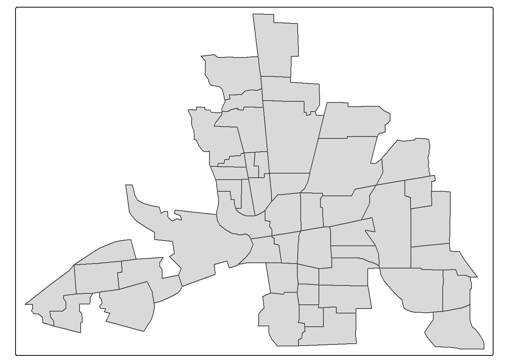
Plot of Crime Variable
tm_shape(columbus) +tm_polygons(style="quantile", col ="CRIME") +tm_legend(outside =TRUE, text.size = .8)
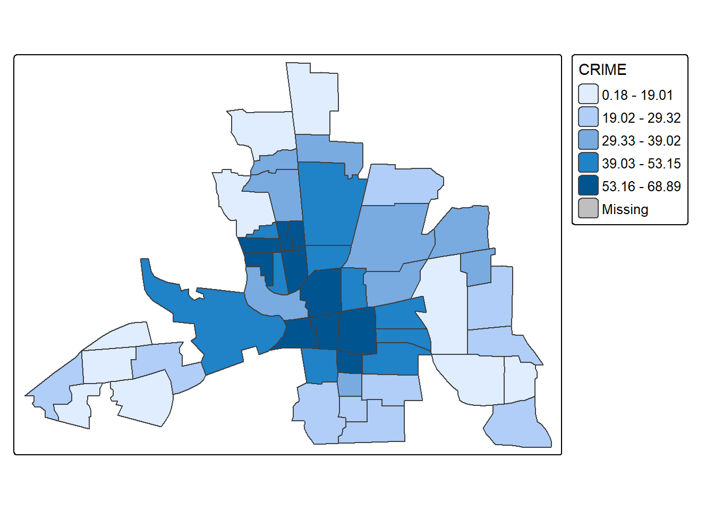
EU Nuts2 Dataset
EU NUTS 2 level GDP per capita (Euros), 2009.
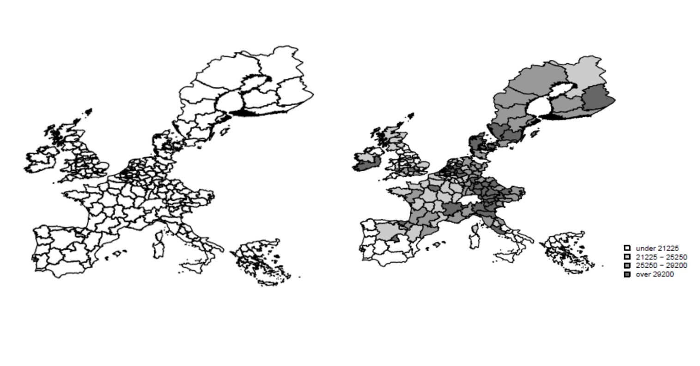
Analysing Spatial Lattice Data
Tobler’s first law of geography:
“Everything is related to everything else, but close things are more related than things that are far apart.”
From this definition, we need to identify:
what we mean by spatial dependence;
how we measure spatial dependence;
who the neighbours of each spatial unit are; and
what the strength of the relationship is.
For each unit we therefore need a list of neighbours and a corresponding set of spatial weights.
Tip — click for more
Tobler’s law is a motivation, not a statistical model. Spatial statistics makes it operational by defining which locations are close, how strongly they are connected, and whether neighbouring values are more similar than would be expected under a suitable null model.
Definition of Spatial Dependence
Spatial dependence in a collection of sample observations refers to the fact that an observation associated with location \(i\) depends on observations at locations \(j\), where \(i\neq j\).
Why does spatial dependence occur? Two main reasons are highlighted by LeSage (1998, pp. 4–5):
measurement error related to the data-collection process for geographical units;
the spatial dimension of the research problem may itself be important in explaining the process under study.
Tip — click for more
Spatial dependence may be substantive—because processes spill across borders—or partly induced by how data are measured and aggregated. This is one reason the choice of spatial unit and spatial weights needs substantive justification.
Spatial dependence reflects a situation where values observed in one areal unit, depend on the values of neighbouring observations at near-by areas.
Positive and Negative Spatial Dependence
Positive spatial dependence
Objects—points, areas, or lines—that are close in space tend to assume similar values. This produces spatial clustering of similar values.
Negative spatial dependence
Objects that are close in space tend to assume dissimilar values. This can produce an alternating or checkerboard-like arrangement.
Spatial dependence can therefore take the form of spatial correlation.
Ref: Giuseppe Arbia lecture notes, SEAI 2011.
Tip — click for more
Positive and negative dependence describe the sign of local association. They should not be confused with high and low values themselves: a low value surrounded by low values is still positive spatial association.
Exploring Spatial Dependence
The level of spatial dependence can be explored using graphical techniques and statistical measures:
graphical representations of spatial dependence;
Moran’s \(I\);
Geary’s \(C\).
Cliff and Ord (1972, 1975, 1981) found Moran’s \(I\) to be a particularly useful measure in many settings.
Tip — click for more
Moran’s I and Geary’s C both combine attribute information with spatial relationships, but they emphasise different aspects. Moran’s I works with cross-products of deviations from the mean; Geary’s C works with squared pairwise differences.
Moran’s I and Geary’s C are very alike, and they both account for the attribute similarity and locational similarity. Moran’s I looks at similarity, whereas Geary’s C focuses on dissimilarity, similar to the notion of variogram as in geostatistics. Moran’s I and Geary’s C are interpreted in an opposite manner. Moran’s I and Geary’s C are very much linked to weights matrices. With correlograms and variograms, we will step away from weights matrices and look at distances. We still have attribute similarity however the locational similarity will be replaced with increasing distances between pairs of observations.
Global Moran’s I Statistic
Global Moran’s \(I\) combines attribute similarity and locational similarity.
For a variable \(y\), let
\[
z_i = y_i-\bar y,
\]
and let \(W^s=(w^s_{ij})\) denote the row standardizesd spatial weights matrix. The general form of Moran’s \(I\) is
\[
I =
\frac{Z'W^sZ}{Z'Z}
\]
where
\[
\sum_{i,j=1}^{n}w^s_{ij}=n.
\]
For a row-standardised weights matrix, the spatial lag \(W^sZ\) is the weighted mean of neighbouring standardised observations.
Tip — click for more
The spatial weights matrix is not a minor technical choice. It defines the spatial comparison being made. Changing \(W\) can change the value, interpretation, and significance of Moran’s \(I\).
Global Moran’s I can be seen as a measure of spatial autocorrelation overall, as one measure, later on we will look at Local Moran’s I which is more useful to look at specific locations and find hotspots etc. WE can only use this statistic when 2 assumptions are satisfied: 1) Constant mean: We deal with that by mean standardizing our variable. Centring on the mean is equivalent to asserting that the correct model has a constant mean (zero mean since we mean standardized the variable into Z), and that any remaining patterning after centring is caused by the spatial relationships encoded in the spatial weights. The second assumption is constant variance, given in the denominator. There are some ways to deal with that as well. The value depends highly on the weights matrix chosen therefore we cannot compare different Moran’s I statistics from different datasets or weights used. However we can convert the Moran’s I statistic into a Z value which takes into account the differences in data and weights matrices used and then compare the Z values.
How to Construct Weights’ Matrix
For geographic lattice data, there are two broad choices for \(W\) (Arbia, 2006, pp.37-38, Fischer et al., 2010, pp.66-68, LeSage, 1999, pp.11-13):
Boundary-based weights
Rook
Bishop
Queen
Distance-based weights
\(k\)-nearest-neighbour connectivity
critical cut-off connectivity
inverse-distance connectivity
distance-decay functions
combinations of these approaches
Tip — click for more
Boundary-based weights are often natural for administrative polygons. Distance-based weights can be preferable when interaction does not stop at administrative borders, or when the units are points/centroids rather than contiguous polygons.
Spatial Weights Based on Boundaries : These types of spatial weights define two observations connected if they share a common boundary. Contiguity based measures are more relevant for a polygon type data set or for observations that have a polygon attribute. There are three different ways to represent the connectivity based on the boundaries ( Arbia , 2006, pp.37-38, Fischer et al., 2010, pp.66-68, LeSage, 1999, pp.11-13),such as: Spatial Weights Based on Distances: Binary or real valued spatial weights are based on the distances between the centroids of each observation. There are several approaches in defining the observations that are connected based on distances between them ( Arbia , 2006, pp.37-38, Fischer et al., 2010, pp.66-68) K-nearest neighbour connectivity Critical cut-off based connectivity Inverse distance connectivity Distance decay function Combination of the several
Defining Spatial Neighbours: Boundary Based
Neighbourhood relationships can be defined in several ways (Arbia, 2005, p. 37).
For polygon data, a simple definition is contiguity: polygons \(i\) and \(j\) are neighbours when they share part of their boundary.
The three forms considered here are:
Rook: common side;
Bishop: common vertex only;
Queen: common side or common vertex.
Tip — click for more
Robustness matters. If conclusions change dramatically when moving from rook to queen contiguity, or from one distance threshold to another, that sensitivity is itself an important empirical finding.
It needs to be stressed here that the result of any econometric analysis will be dependent on the specific topology (and, hence, of the neighbouring structure) chosen for the random field. Consequently it is always wise to test the robustness of the results obtained by adopting several definitions of neighbourhood.
Spatial Weights Based on Boundaries
A hypothetical five-region configuration is used to construct and interpret a binary contiguity matrix \(W\).
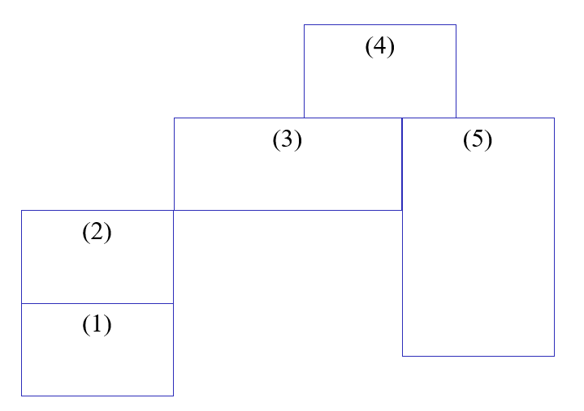
Le Sage page: 9 Figure 1.2 shows a hypothetical example of five regions as they would appear on a map. We wish to construct a 5 by 5 binary matrix W containing 25 elements taking values of 0 or 1 that captures the notion of “connectiveness” between the five entities depicted in the map congfiuration. We record in each row of the matrix W a set of contiguity relations associated with one of the five regions. For example the matrix element in row 1, column 2 would record the presence (represented by a 1) or absence (denoted by 0) of a contiguity relationship between regions 1 and 2. As another example, the row 3, column 4 element would reflect the presence or absence of contiguity between regions 3 and 4. Of course, a matrix constructed in such fashion must be symmetric | if regions 3 and 4 are contiguous, so are regions 4 and 3.
Spatial Weights Based on Boundaries: Rook Contiguity
Rook contiguity: define
\[
w_{ij} =
\begin{cases}
1, & \text{if regions } i \text{ and } j \text{ share a common side},\\
0, & \text{otherwise}.
\end{cases}
\]
The diagonal is normally set to zero, \(w_{ii}=0\), because a region is not treated as its own neighbour.
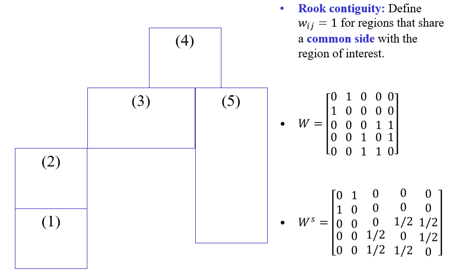
Tip — click for more
Rook contiguity is stricter than queen contiguity because touching at a corner is not enough. For grid cells this corresponds to the four orthogonal directions.
library(sf)library(spdep)# For a polygon sf object called x:rook_nb <-poly2nb(columbus, queen =FALSE)rook_w <-nb2listw(rook_nb, style ="W")head(rook_nb)
A transformation often used in applied work is to convert the matrix W to have row-sums of unity. This is referred to as a standardized first-order” contiguity matrix, which we denote as Ws
Spatial Weights Based on Boundaries: Bishop Contiguity
Bishop contiguity: define
\[
w_{ij} =
\begin{cases}
1, & \text{if regions } i \text{ and } j \text{ share a common vertex only},\\
0, & \text{otherwise}.
\end{cases}
\]
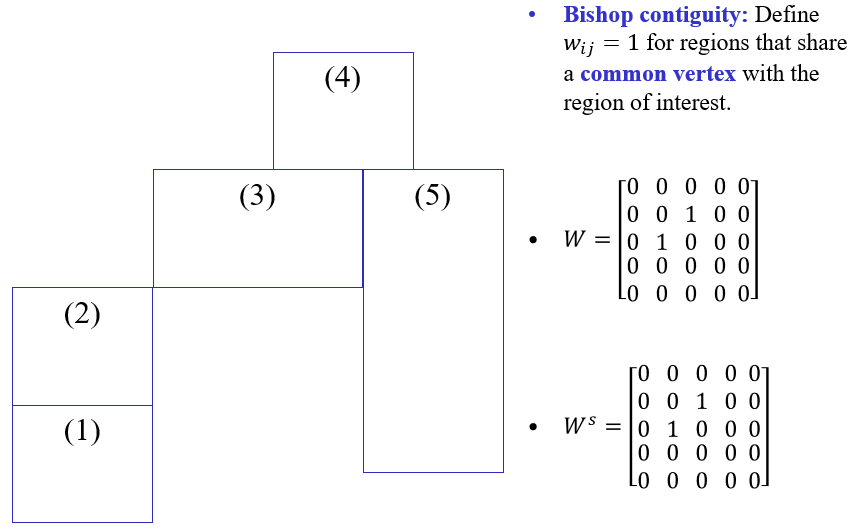
Tip — click for more
Bishop contiguity is rarely used on its own in applied lattice analysis, but it is useful pedagogically because it isolates vertex-only contact.
Spatial Weights Based on Boundaries: Queen Contiguity
Queen contiguity: define
\[
w_{ij} =
\begin{cases}
1, & \text{if regions } i \text{ and } j \text{ share a common side or vertex},\\
0, & \text{otherwise}.
\end{cases}
\]
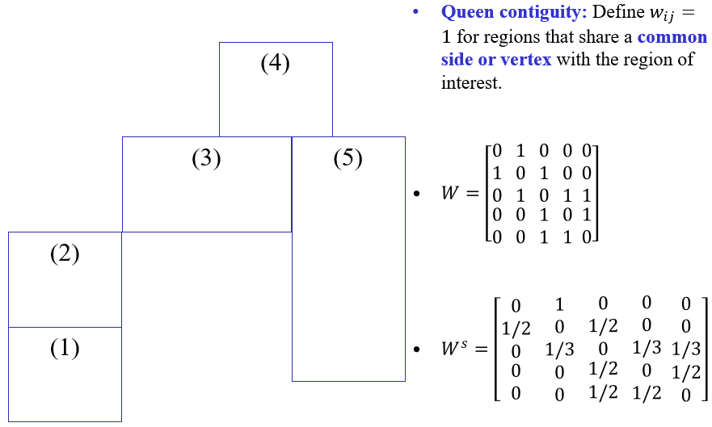
Tip — click for more
Queen contiguity is the union of rook and bishop relationships. On a regular grid it corresponds to up to eight surrounding cells.
where \(d_{ij}\) is the adopted distance measure and \(d^*\) is a chosen critical cut-off.
Tip — click for more
For \(k\)-nearest neighbours every observation can be given exactly \(k\) outgoing neighbour links, which avoids isolates. A fixed distance threshold instead preserves a common physical scale but may create very different neighbour counts across dense and sparse areas.
where distances are calculated from information on latitude and longitude of the centroid locations. Examples include straight-line distances, great circle distances, travel distances or times, and other spatial separation measures. Straight-line distances determine the shortest distance between any two point locations in a flat plane, treating longitude and latitude of a location as if they were equivalent to plane coordinates. In contrast, great circle distances determine distances between any two points on a spherical surface such as the earth as the length of the arc of the great circle between them (see Longley et al. 2001, pp. 86–92, for more details). In many applications the simple measures—straight-line distances and great circle distances—are not sufficiently accurate estimates of actual travel distances, and one is forced to resort to summing the actual lengths of travel routes, using a GISystem . This normally means summing the length of links in a network representation of a transportation system.
Spatial Weights Based on Distances: 1st Nearest Neighbour – Obs (1)
For observation (1), calculate pairwise centroid distances and identify the closest observation. The first-nearest-neighbour link is then entered in the neighbour structure.
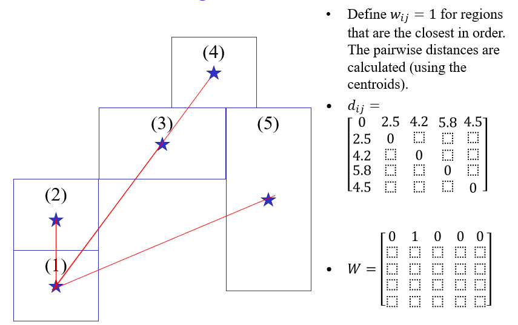
Spatial Weights Based on Distances: 1st Nearest Neighbour – Obs (2)
For observation (2), calculate pairwise centroid distances and identify the closest observation. The first-nearest-neighbour link is then entered in the neighbour structure.
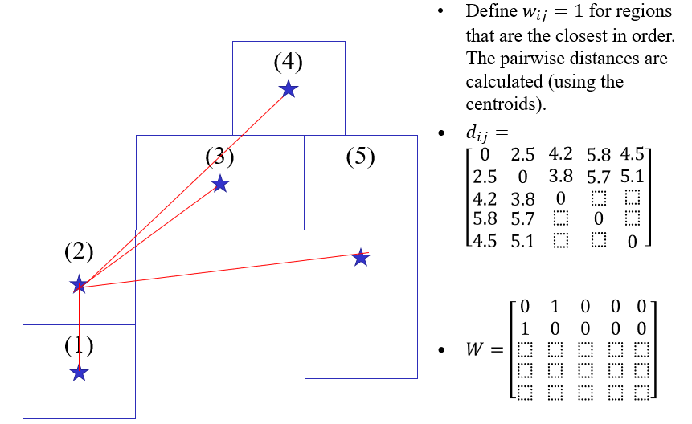
Spatial Weights Based on Distances: 1st Nearest Neighbour – Obs (3)
For observation (3), calculate pairwise centroid distances and identify the closest observation. The first-nearest-neighbour link is then entered in the neighbour structure.
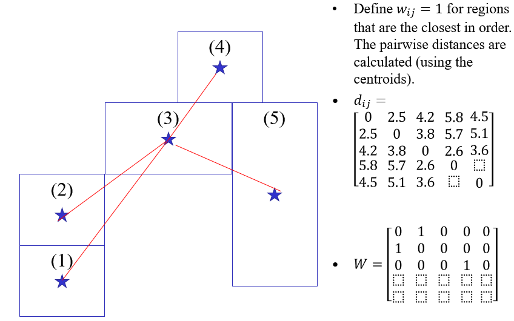
Spatial Weights Based on Distances: 1st Nearest Neighbour – Obs (4)
For observation (4), calculate pairwise centroid distances and identify the closest observation. The first-nearest-neighbour link is then entered in the neighbour structure.
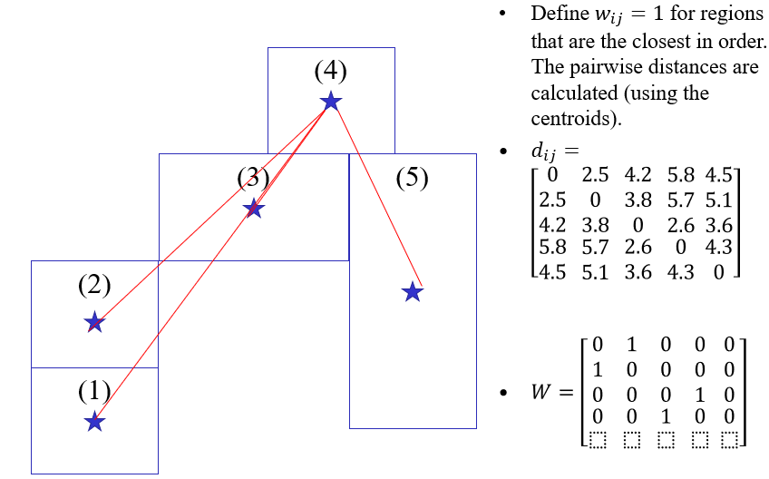
Spatial Weights Based on Distances: 1st Nearest Neighbour – Obs (5)
For observation (5), calculate pairwise centroid distances and identify the closest observation. The first-nearest-neighbour link is then entered in the neighbour structure.
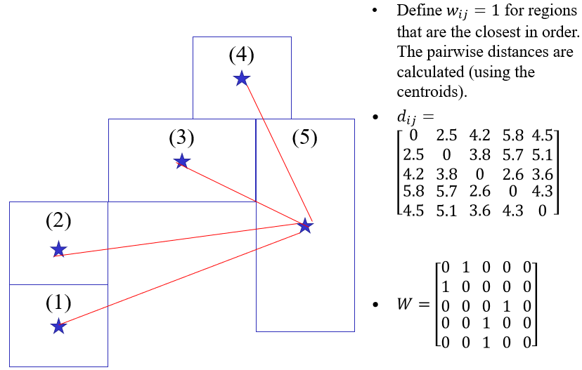
Spatial Weights Based on Distances: 1st Nearest Neighbour
Combining the first-nearest-neighbour relationships for all five observations gives the complete first-nearest-neighbour graph.
Neighbour list object:
Number of regions: 49
Number of nonzero links: 252
Percentage nonzero weights: 10.49563
Average number of links: 5.142857
2 disjoint connected subgraphs
Link number distribution:
1 2 3 4 5 6 7 8 9 10 11
4 8 6 2 5 8 6 2 6 1 1
4 least connected regions:
6 10 21 47 with 1 link
1 most connected region:
28 with 11 links
If you examine this neighbourhood list object a bit more closely you will see that, Polygon1 is neighbours with Poly2 and Poly3; Polygon2 is neighbours with Poly1 and Poly4; Polygon3 is neighbours with Poly1, Poly4 and Poly5 and so on:
dnbTresh1[1:3]
[[1]]
[1] 2 3
[[2]]
[1] 1 4
[[3]]
[1] 1 4 5
In calculation of the weights that will be used to create the spatially lagged variables, only the neighbours values are going to be used. For example for the 1st Polygon, the values of neighbouring Poly2 and Poly3 will be used. Before doing this the nb values need to be standardized, so that the row
Neighbours to Weights Matrix
Here we will work with the Critical Cut-off nearest neighbours
Choosing a threshold of \(68\) therefore guarantees that every centroid has at least one neighbour. As you can see row sum of the \(W^s\) is always 1, we row-standardized the W matrix.
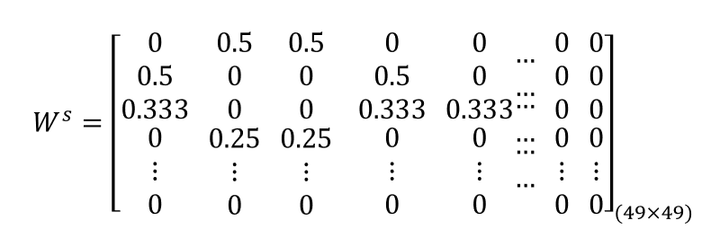
Tip — click for more
Choosing the maximum first-nearest-neighbour distance as the threshold is a practical way to prevent isolates. It does not mean that this threshold is substantively optimal; it is a connectivity-based choice that should still be checked against the research problem.
Tip — click for more
Row standardisation makes every row sum to one, so each area’s neighbours collectively receive the same total weight. A consequence is that a region with two neighbours gives each neighbour more weight than a region with ten neighbours, all else equal.
The level of spatial dependence (spatial autocorrelation) can be explored with:
Moran’s \(I\);
Geary’s \(C\);
graphical representations such as the Moran scatter plot, correlogram, and variogram.
Tip — click for more
A spatial autocorrelation test asks whether the observed arrangement of values is more spatially structured than expected under a null model. Analytical tests and permutation tests use different routes to construct that reference distribution.
Spatial autocorrelation tests are decision rules based on statistics such as Moran’s I and Geary’s c to assess the extent to which the observed spatial arrangement of data values departs from the null hypothesis that space does not matter. This hypothesis implies that near-by areas do not affect one another such that there is independence and spatial randomness. In contrast, under the alternative hypothesis of spatial autocorrelation (spatial association, spatial dependence), the interest renders on cases where large values are surrounded by other large values in near-by areas, or small values are surrounded by large values and vice versa. The former is referred to as positive spatial autocorrelation, and the latter as negative spatial autocorrelation. Positive spatial autocorrelation implies a spatial clustering of similar values, while negative spatial autocorrelation implies a checkerboard pattern of values
Some notation
To simplify notation:
\(n\): number of spatial areas;
\(i,j\): two areal units;
\(y_i\): value of the variable of interest at area \(i\);
\(z_i=y_i-\bar y\): mean-centred value at area \(i\);
\(w_{ij}\): measure of spatial connection between \(i\) and \(j\);
Global Measures of Spatial Autocorrelation: Moran’s I Statistic
Moran’s \(I\) is a global measure: it provides one summary of spatial autocorrelation for the entire spatial pattern.
\[
I =
\frac{Z'W^sZ}{Z'Z}
\]
With row-standardised \(W^s\), this is closely related to the cross-product between the centred variable \(Z'=Y-\bar{Y}\) and its spatial lag \(W^sZ\).
Tip — click for more
The numerator of Moran’s \(I\) is large and positive when connected areas tend to have deviations from the mean with the same sign. It becomes negative when neighbours tend to fall on opposite sides of the mean.
Spatial autocorrelation is considered to be present when the spatial autocorrelation statistic computed for a particular pattern takes on a larger value, compared to what would be expected under the null hypothesis of no spatial association.
Moran’s I Expected Value and Variance
Under the randomisation null hypothesis, the expected value of Moran’s \(I\) is
\[
E(I)=-\frac{1}{n-1}.
\]
Thus, under the null, Moran’s \(I\) is not centred exactly at zero for a finite sample. As \(n\) increases,
\[
E(I)\longrightarrow 0.
\]
A standardised test statistic can be constructed as
Because \(E(I)=-1/(n-1)\), comparing an observed \(I\) directly with zero is only an approximation. Formal inference compares the observed statistic with its expected value and variability under the selected null model.
Under spatial random process, the expected value of Moran’s I is given as follows. As you can see it is not centred around 0, it is a bit off to the negative side. And it depends on n, sample size. As n becomes larger and larger, Moran’s I gets closer to zero. The key question is the statistic that we obtained from the data, does it come from a spatial random process or not? In order to do the test we need the variance. As I mentioned earlier E(I)/Var(I) is comparable since the variance takes into account the different W values.
Comparing Moran’s I
Two broad approaches are used to assess whether an observed Moran’s \(I\) departs significantly from the null hypothesis of no spatial autocorrelation:
In principle, there are two main approaches to testing observed I -values for significant departure from the hypothesis of zero spatial autocorrelation. 1) Random permutation test 2) approximate sampling distribution of the I values.
Moran’s I Statistics
A Moran’s \(I\) value above its expected value indicates positive spatial autocorrelation.
A Moran’s \(I\) value below its expected value indicates negative spatial autocorrelation.
Moran’s \(I\) is a global measure: it does not by itself identify where local clusters or outliers occur.
Tip — click for more
The magnitude of a raw Moran’s \(I\) should not be compared casually across different data sets or different weights matrices. For inference, use the reference distribution appropriate to the selected \(W\) and null hypothesis.
Calculation of Moran’s I for the Columbus Dataset with Cut-off neighbourhood
For the Columbus CRIME variable, first centre the observations:
\[
z_i = y_i-\bar y.
\]
The first part of the centred vector in the original analysis is:
with a standard deviate of \(5.6206\) and a very small \(p\)-value.
moran.test(columbus$CRIME,dnbTresh1.listw)
Moran I test under randomisation
data: columbus$CRIME
weights: dnbTresh1.listw
Moran I statistic standard deviate = 5.6206, p-value = 9.514e-09
alternative hypothesis: greater
sample estimates:
Moran I statistic Expectation Variance
0.55182569 -0.02083333 0.01038068
Tip — click for more
The compact matrix expression is useful because it shows Moran’s \(I\) as a normalised spatial cross-product. It is also the bridge to spatial regression models, where \(Wy\) becomes the spatially lagged response.
We need to do matrix calculations in order to calculate the Moran’s I statistic.
Moran Scatter Plot: Y_s vs lagY_s
The Moran scatter plot places the centred or standardised variable on the horizontal axis and its spatial lag on the vertical axis:
\[
Z_i \quad \text{versus} \quad (WZ)_i.
\]
When \(W\) and \(z\) are standardised consistently, the slope of the fitted line is Moran’s \(I\).
The plot therefore links the global statistic to the local behaviour of individual observations.
lm_eqn <-function(df, y, x){ m <-lm(y ~ x, df); eq <-substitute(italic(y) == a + b %.%italic(x)*","~~italic(r)^2~"="~r2, list(a =format(unname(coef(m)[1]), digits =2),b =format(unname(coef(m)[2]), digits =2),r2 =format(summary(m)$r.squared, digits =3)))as.character(as.expression(eq));}dataMoransI =data.frame(Y_s, lagY_s)library(ggplot2)ggplot(dataMoransI, aes(x = Y_s, y = lagY_s)) +geom_point() +geom_smooth(method ="lm", se=FALSE)+geom_text(x =-10, y =20, label =lm_eqn(dataMoransI,lagY_s,Y_s), parse =TRUE)+geom_vline(xintercept=0, linetype="dashed", color ="red")+geom_hline(yintercept=0.78, linetype="dashed", color ="red")
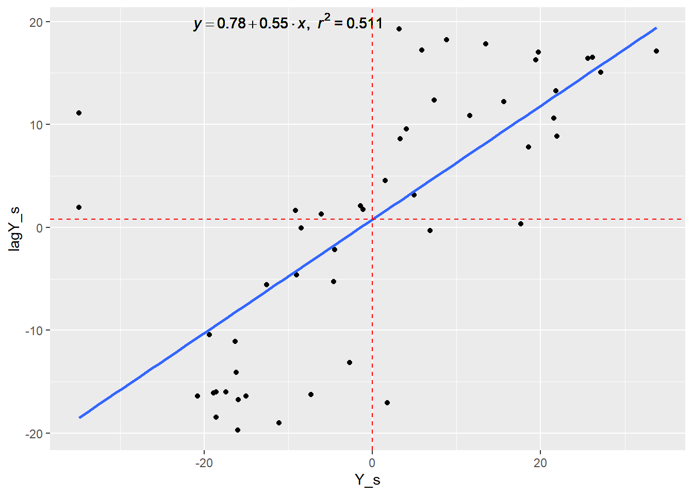
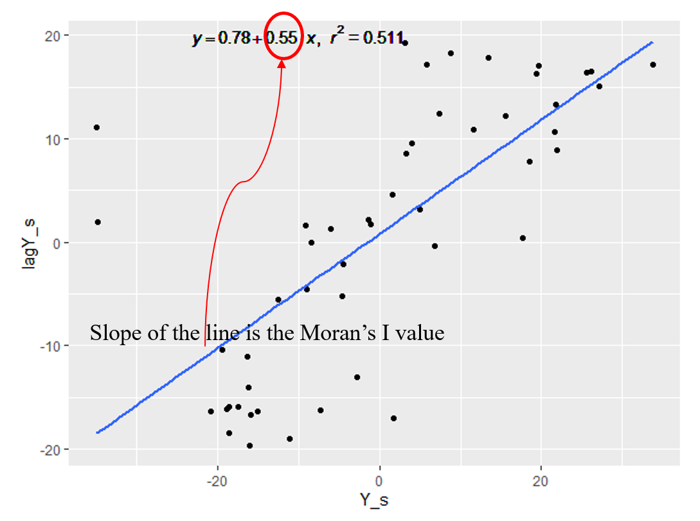
Tip — click for more
The Moran scatter plot is descriptive. Influential observations can strongly affect the fitted slope, so ordinary regression \(t\)-tests on that plotted line are not a substitute for a spatial randomisation test.
As you can see Moran’s I is the slope of the linear association between the attribute and its lagged values based on a weights matrix, should you use significance tests on this slope? NO. Why NOT? Need to be careful with outliers, since we all know the outliers influence the slope. What this plot helps us do is to move from global to local thinking.
Tip — click for more
we can also apply standard techniques for detecting observations with unusually strong influence on the slope. Specifically, moran.plot calls influence.measures on the linear model of lm ( wy ∼ y) providing the slope coefficient, where wy is the spatially lagged value of y .
Moran’s I
The Moran scatter plot is partitioned into four quadrants:
Quadrant
Observation
Neighbours
Interpretation
High–High
High
High
positive association / high-value cluster
Low–Low
Low
Low
positive association / low-value cluster
High–Low
High
Low
negative association / spatial outlier
Low–High
Low
High
negative association / spatial outlier
The High–High and Low–Low quadrants represent positive spatial autocorrelation.
The High–Low and Low–High quadrants represent negative spatial autocorrelation.
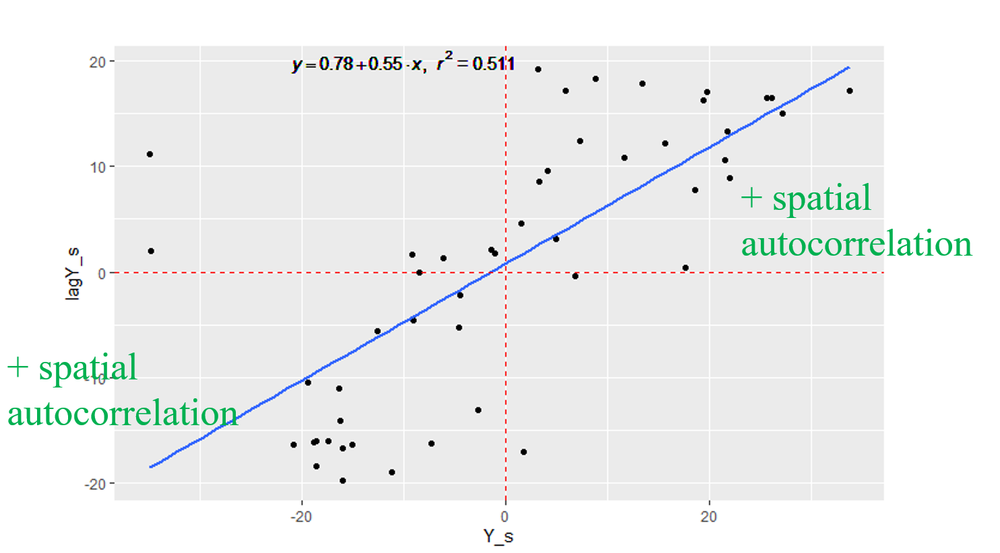
Tip — click for more
Quadrants describe the sign pattern of a location and its spatial lag. Statistical significance is a separate question. A High–High point is not automatically a significant hot spot until a local inferential procedure is applied.
The plot is further partitioned into quadrants at the mean values of the variable and its lagged values: low–low, low–high, high–low, and high–high. We have the 4 quadrats of the scatter plot, where upper right and lower left indicate positive spatial autocorrelation indicating that locations are similar to their neighbours, whereas lower right and upper left show negative spatial autocorrelation which indicates the spatial outliers, locations are different from their neighbours.
Geary’s C
Geary’s \(C\) focuses on squared differences between neighbouring observations:
Interpretation is opposite in direction to Moran’s \(I\):
\(C<1\): positive spatial autocorrelation;
\(C\approx1\): spatial randomness;
\(C>1\): negative spatial autocorrelation.
Tip — click for more
Geary’s C reacts strongly to local neighbour-to-neighbour differences. Its null reference value is approximately 1, which is why its interpretation runs in the opposite numerical direction to Moran’s \(I\).
Geary C test under randomisation
data: columbus$CRIME
weights: dnbTresh1.listw
Geary C statistic standard deviate = 5.2484, p-value = 1
alternative hypothesis: Expectation less than statistic
sample estimates:
Geary C statistic Expectation Variance
0.44927847 1.00000000 0.01101077
Spatial Correlogram
A non-parametric spatial correlogram is an alternative way of studying global spatial dependence.
Rather than beginning with one predefined weights matrix, it examines the association between pairs of observations as a function of their separation distance.
\(d_{ij}\) is the pairwise distance between locations \(i\) and \(j\);
\(f(\cdot)\) is a non-parametric function estimated from the data;
a LOWESS or kernel smoother may be used.
This allows us to ask how spatial association changes as distance increases.
Tip — click for more
A distance-based correlogram helps reveal the scale of spatial dependence. Positive association at short distances may decay, disappear, or even become negative as distance increases.
Both Moran’s I and Geary’s C depend on weights matrices, coming from neighbourhood relationships. Most people would find this description arbitrary. In fact there are tons of different neighbourhood descriptions one can make. It might be worthwhile investigating other ways of measuring spatial autocorrelation.
Here we see the values of Moran’s I for ten successive lag orders of contiguous neighbours. The Figure shows the output plot from spdep package with sp.correlogram () function, and suggests that second-order neighbours are also positively autocorrelated. The horizontal line is the expected Moran’s I under no spatial autocorrelation.
Local Measures and Tests for Spatial Autocorrelation
Local Indicators of Spatial Association (LISA) were introduced by Anselin (1995) to decompose global spatial autocorrelation into contributions from individual observations.
A common form of the local Moran statistic for area \(i\) is
\[
I_i
=
\frac{z_i}{m_2}
\sum_j w_{ij}z_j,
\]
where
\[
z_i=y_i-\bar y,
\qquad
m_2=\frac{1}{n}\sum_i z_i^2.
\]
The summation runs over the neighbourhood of area \(i\).
The collection of local Moran statistics is related to the global Moran statistic: their sum is proportional to global Moran’s \(I\).
Tip — click for more
Global Moran’s \(I\) can be significant while hiding substantial local heterogeneity. LISA statistics help reveal where the global pattern is being generated and where spatial outliers occur.
With the advent of large data sets characteristic of GISystems , it has become clear that the need to assess spatial autocorrelation globally may be of only marginal interest. During the past two decades, a number of statistics, called local statistics, have been developed. These provide for each observation of a variable an indication of the extent of significant spatial clustering of similar values around that observation. Hence, they are well suited to identify the existence of hot spots (local clusters of high values) or cold spots (local clusters of low values), and are appropriate to identify distances beyond which no discernible association exists. Local indicators of spatial association (LISA) statistics were derived by Anselin (1995), in his paper of Local Indicators of Spatial Association—LISA published in Geographical Analysis in 1995. An initial evaluation of the properties of a LISA statistic is carried out for the local Moran, which is applied in a study of the spatial pattern of conflict for African countries and in a number of Monte Carlo simulations. HE suggests that a local indicator of spatial association (LISA) is any statistic that satisfies the following two requirements a) the LISA for each observation gives an indication of the extent of significant spatial clustering of similar values around that observation; b. the sum of LISAs for all observations is proportional to a global indicator of spatial association. The local Moran statistic is defined as follows: where denotes the neighbourhood set of area (can be formalized by means of a spatial weights or contiguity matrix) , and the summation in runs only over those areas belonging to , denotes the average of these neighbouring observations. The LISA statistic, Ii serve two purposes. On the one hand, they may be viewed as indicators of local pockets of non-stationarity, or hot spots. On the other hand, they may be used to assess the influence of individual locations (observations) on the magnitude of the corresponding global spatial autocorrelation statistic, Moran’s I With the advent of large data sets characteristic of GISystems , it has become clear that the need to assess spatial autocorrelation globally may be of only marginal interest. During the past two decades, a number of statistics, called local statistics, have been developed. These provide for each observation of a variable an indication of the extent of significant spatial clustering of similar values around that observation. Hence, they are well suited to identify the existence of hot spots (local clusters of high values) or cold spots (local clusters of low values), and are appropriate to identify distances beyond which no discernible association exists. Local indicators of spatial association (LISA) statistics were derived by Anselin (1995), in his paper of Local Indicators of Spatial Association—LISA published in Geographical Analysis in 1995. An initial evaluation of the properties of a LISA statistic is carried out for the local Moran, which is applied in a study of the spatial pattern of conflict for African countries and in a number of Monte Carlo simulations. HE suggests that a local indicator of spatial association (LISA) is any statistic that satisfies the following two requirements a) the LISA for each observation gives an indication of the extent of significant spatial clustering of similar values around that observation; b. the sum of LISAs for all observations is proportional to a global indicator of spatial association. The local Moran statistic is defined as follows: where 𝐽_𝑖 denotes the neighbourhood set of area 𝑖 (can be formalized by means of a spatial weights or contiguity matrix) , and the summation in 𝑗 runs only over those areas belonging to 𝐽_𝑖 , 𝑧 ̅ denotes the average of these neighbouring observations. The LISA statistic, Ii serve two purposes. On the one hand, they may be viewed as indicators of local pockets of non-stationarity, or hot spots. On the other hand, they may be used to assess the influence of individual locations (observations) on the magnitude of the corresponding global spatial autocorrelation statistic, Moran’s I
Identification of Local Spatial Clusters
Local spatial clusters—often called hot spots or cold spots—may be identified as locations, or sets of contiguous locations, for which a LISA statistic is significant.
The null hypothesis is no local spatial association.
Because the exact distribution of a generic LISA statistic can be difficult to obtain, a common alternative is a conditional randomisation / permutation procedure that produces empirical pseudo-\(p\)-values.
Tip — click for more
In conditional permutation for local Moran’s \(I_i\), the focal value at location \(i\) is held fixed while values at other locations are permuted. The observed \(I_i\) is then compared with this empirical reference distribution.
# Conditional permutation inference for local Moran statisticslocal_perm <-localmoran_perm( columbus$CRIME, dnbTresh1.listw,nsim =999)head(local_perm)
A test for significant local spatial association may be based on the moments, although the exact distribution of such a statistic is still unknown ( Anselin 1995, p. 99). Alternatively, a conditional random permutation test can be used to yield so-called pseudo significance levels . (for example, as in Hubert 1987). The randomization is conditional in the sense that the value Yi at a location i is held fixed (that is, not used in the permutation) and the remaining values are randomly permuted over the locations in the data set. For each of these resampled data sets, the value of Li can be computed. The resulting empirical distribution function provides the basis for a statement about the extremeness (or lack of extremeness) of the observed statistic, relative to (and conditional on) the values computed under the null hypothesis (the randomly permuted values). In practice, this is straightforward to implement, since for each location only as many values as there are in the neighborhood set need to be resampled. Note that this same approach can also easily be applied to the Gi and GT statistics.
tm_shape(columbus) +tm_polygons(style="quantile", col ="localmoran") +tm_legend(outside =TRUE, text.size = .8)
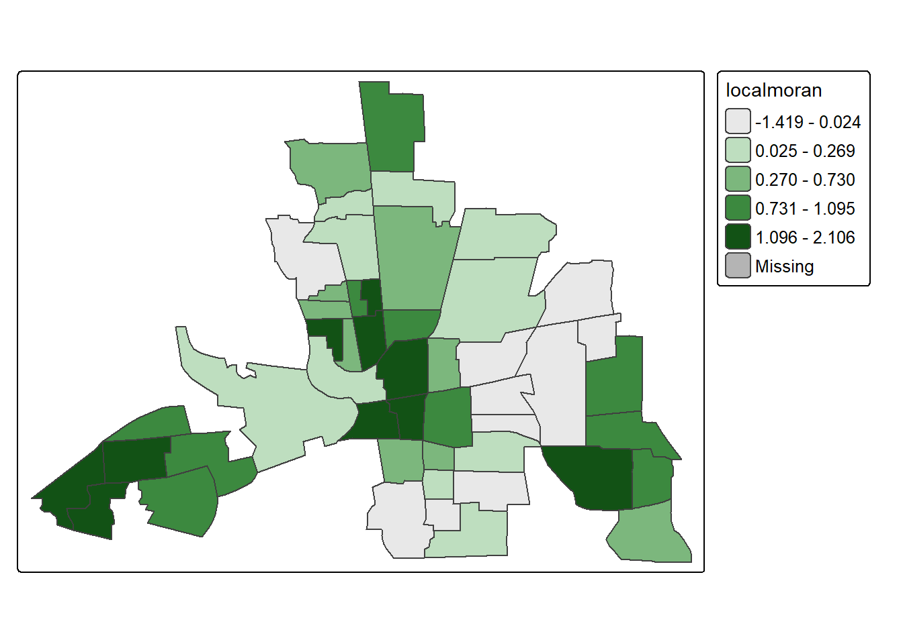
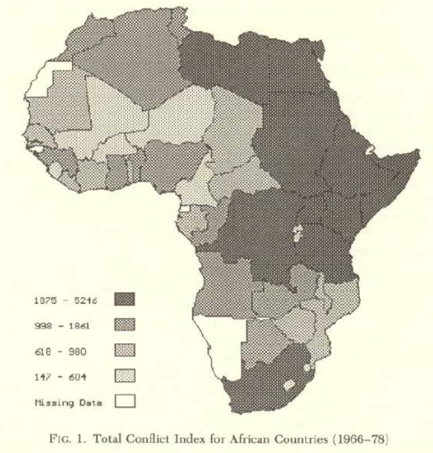
Measures of spatial association, such as Moran’s I, have been applied to quantitative indices for various types of conflicts and cooperation between nation-states in Africa, such as those contained in the COPDAB data base (Azar 1980). The spatial pattern of the index for total conflict is illustrated in the quartile map in Figure 1, with the darkest shade corresponding to the highest quartile [for details on the data sources, see Anselin and O’Loughlin (1992)]. The suggestion of spatial clustering of similar values that follows from a visual inspection of this map is confirmed by a strong positive and significant Moran’s I of 0.417, with an associated standard normal z-value of 4.35 (p < 0.001), These statistics are computed for a row-standardized spatial weights matrix based on first-order contiguity (common border), given the importance of borders in the study of international conflict. Allcomputationswere carried out with the SpaceStat softwarefor spatial data analysis
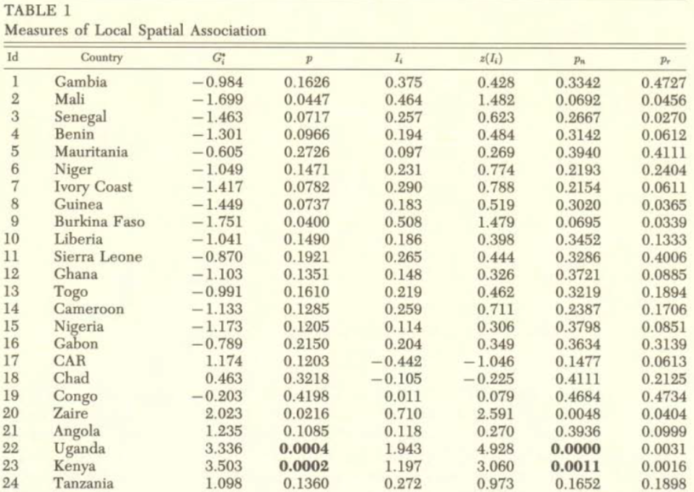
Using the same row-standardized weights matrix as for the global measures given earlier, the results for the indicators of local spatial association are reported in the third and fifth columns of Table 1, for each of the forty-two countries in the example. The standardized z-value for Ii , computed by subtracting the expected value (13) and dividing by the standard deviation [the square root of (14)], is listed in the sixth column. Two indications of significance are given, one based on an approximation by the normal distribution, Pn (in the seventh column of Table 1) and one derived from conditional randomization, using a sample of 10,000 permutations, Pr (in the last column of Table 1). Given this conservative procedure, the normal approximation for both the Gi and the Ii show the same four countries to exhibit local spatial clustering (with the significance levels in bold type in Table 1). They are Uganda (22), Kenya (23), Sudan (41), and Egypt (42), which themselves form a cluster in the northeast of Africa, part of the so-called Shatterbelt . Shatter belt is a concept in geopolitics according to which on the political map are recognized and analyzed strategically positioned and oriented regions that are deeply internally divided and encompassed in the competition between the great powers in the geostrategic areas and spheres
Local Moran in R
In R, local Moran statistics can be calculated with spdep::localmoran():
The output provides a local statistic for every spatial unit, together with quantities used for inference.
Tip — click for more
Modern spdep::localmoran() returns several columns rather than only \(I_i\). When teaching, it is useful to separate the local statistic itself, its expectation/variance under the chosen framework, and the resulting inferential quantities.